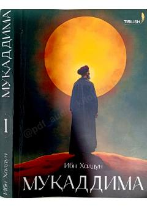

M1Insoniyat sivilizatsiyasi va jamiyat taraqqiyoti qonuniyatlari haqidagi klassik ilmiy asar.
Ibn Xaldunning ushbu fundamental asari insoniyat sivilizatsiyasi, jamiyat taraqqiyoti va tarix ilmining nazariy asoslarini tahlil qiladi. Muallif ko'chmanchi va o'troq xalqlar turmush tarzi, iqlimning inson fe'l-atvoriga ta'siri hamda davlat boshqaruvi kabi muhim ijtimoiy masalalarni ilmiy nuqtai nazardan yoritib beradi.